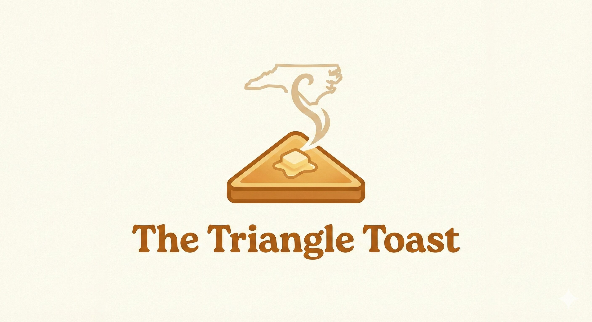

01 // MEDIA & VENTURES
The Triangle Toast
A weekly newsletter providing deep-dive analysis on real estate, tech growth, and cultural shifts within the Raleigh-Durham-Chapel Hill area. I curate trends from over 15 primary local sources to keep the RTP community informed.
02 // PROFESSIONAL
Debt Capital Markets
Working within the fast-paced environment of NYC finance, my experience in DCM involves navigating complex financial structures and market dynamics. This professional rigor informs my approach to legal advocacy as I transition toward my JD.

03 // CREATIVE PERFORMANCE
The Brooklyn Busker
An ongoing study of public engagement through music. By performing violin in public spaces like Central Park and Brooklyn, I bridge the gap between high-pressure professional environments and the organic storytelling of the city streets.

04 // LINGUISTICS
DELF B2 Certification
Currently refining my technical and conversational French fluency. Achieving B2 certification is a cornerstone of my goal to engage with international legal and financial frameworks.